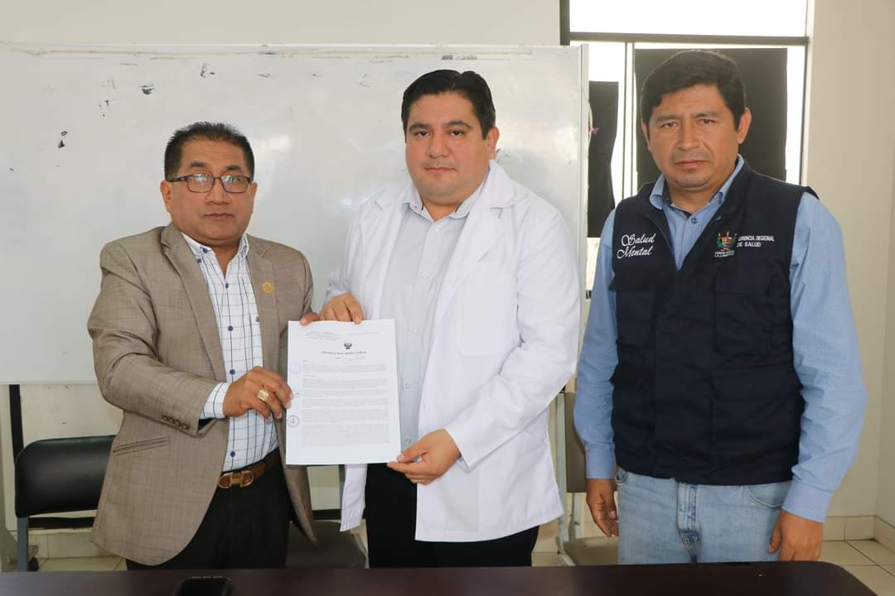
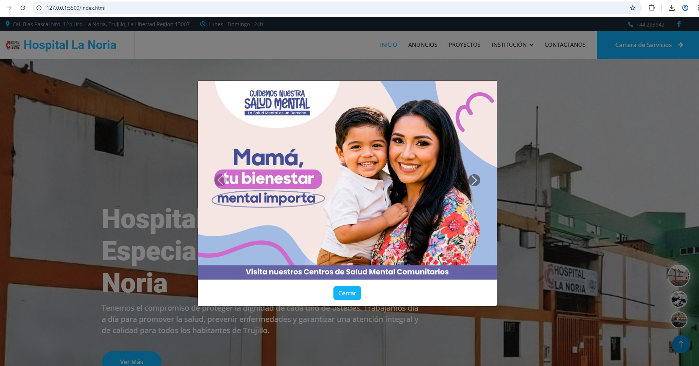
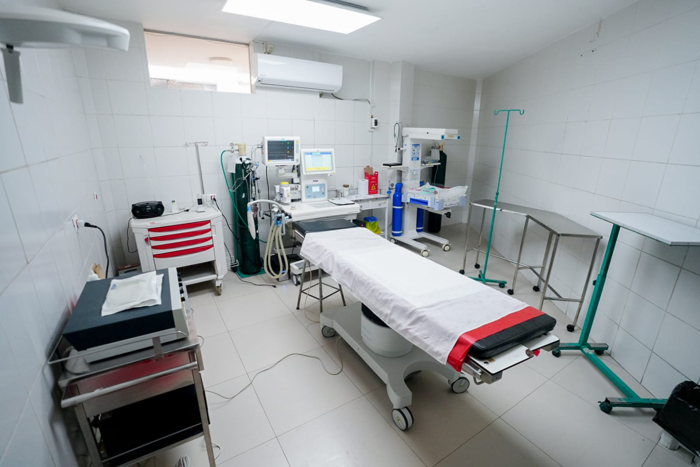

Estos son algunos de los proyectos clave que el Hospital La Noria ha impulsado para fortalecer los servicios de salud y la infraestructura en beneficio de la comunidad.
Ubicación: Exterminal de Chicago, Trujillo
Objetivo: Ampliar la cobertura y modernizar los servicios hospitalarios en una zona estratégica para facilitar el acceso de los pacientes.
Estado: En fase de diseño arquitectónico y viabilidad técnica.
Este nuevo establecimiento busca descongestionar el hospital actual, incorporando áreas especializadas, quirófanos modernos y tecnología médica de punta.
Objetivo: Fortalecer la comunicación con los usuarios mediante una plataforma web que facilite la información sobre servicios, horarios y personal médico.
Estado: En implementación (Fase Beta)
Este sistema busca digitalizar la experiencia del paciente y reducir tiempos de espera en atención mediante citas en línea y acceso a resultados de laboratorio.
Objetivo: Brindar atención médica virtual a poblaciones rurales o de difícil acceso que requieren orientación médica o control periódico.
Estado: En fase piloto
Este programa busca reducir las brechas en salud en zonas vulnerables y mejorar el acceso a especialistas desde centros de salud periféricos.
Objetivo: Reestructurar y equipar el área de emergencias para una atención más rápida, segura y eficaz ante casos críticos.
Estado: Aprobado – En búsqueda de financiamiento
Incluye la adquisición de camillas modernas, desfibriladores, sistemas de triaje y capacitación al personal en respuesta a emergencias masivas.
